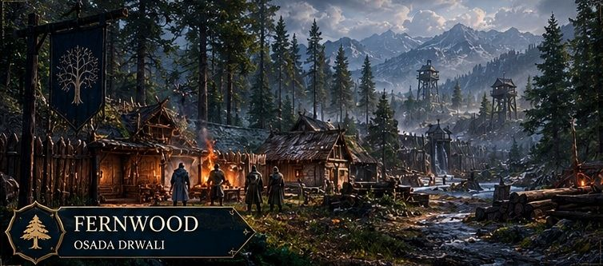

Fernwood
Osada drwali na skraju buntu
Fernwood przeżywa jeden z najcięższych okresów w swojej historii. Rabusie, bandyci i stwory napadają na wioskę na tyle często, że mieszkańcy przestali wierzyć, iż sama obecność królewskich żołnierzy zapewni im bezpieczeństwo.
„Jeśli straż nie chroni naszych domów, sami chwycimy za broń.”
❖Informacje ogólne
Fernwood przeżywa jeden z najcięższych okresów w swojej historii. Rabusie, bandyci i stwory napadają na wioskę na tyle często, że mieszkańcy przestali wierzyć, iż sama obecność królewskich żołnierzy zapewni im bezpieczeństwo.
◆Straże, które nie chronią
Dawnguard utrzymuje w Fernwood zdwojone straże. Ich obecność jest jednak dla mieszkańców gorzkim symbolem: żołnierze pilnują przede wszystkim tego, by problemy nie dotarły do uszu króla. Gdy ktoś ginie w kolejnym napadzie, strażnicy potrafią zbyć sprawę stwierdzeniem, że ofiara powinna była zachować większą ostrożność. Dla mieszkańców oznacza to, że mogą zostać sami nawet wtedy, gdy w wiosce stacjonuje wojsko.
◆Drwale szykują opór
Napięcie utrzymuje się od dawna i osiągnęło poziom krytyczny. Drwale oraz leśnicy zaczęli zbierać się, by przeciwstawić się oddziałom Dawnguardu. Zbierają broń i przygotowują się do działania, choć nie wszyscy są zgodni, jak daleko powinni się posunąć.
◆Spotkania pod domem starszego drwala
Pod domem jednego z najstarszych drwali odbywają się potajemne narady. To tam mieszkańcy ustalają plany i próbują zdecydować, jak rzucić wyzwanie królewskim żołnierzom. Na razie nie jest to otwarte powstanie, ale w Fernwood wystarczy niewiele, by iskra przerodziła się w walkę.
◆Co może nadejść
Fernwood stoi na granicy wybuchu. Jeśli Dawnguard spróbuje rozbić zgromadzenia siłą albo kolejny napad zakończy się śmiercią mieszkańców, wioska może przestać być jedynie miejscem niezadowolenia i stać się początkiem zbrojnego oporu przeciw Stonegardowi.
◆Karta osady

⛰Położenie i znaczenie
Wyrąb lasu i obróbka drewna. Osada znajduje się w okolicach Stonegardu i pozostaje częścią szerszego układu gospodarczego oraz politycznego miasta.
Obecna atmosfera: Napięta, zmęczona, niebezpieczna.
◆Relacje ze Stonegardem
Los osady pozostaje związany z decyzjami podejmowanymi w mieście oraz działaniami królewskich władz. To, jak mieszkańcy reagują na te wpływy, różni się w zależności od lokalnej sytuacji.